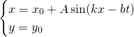
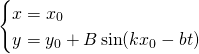
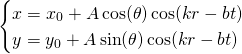
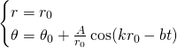
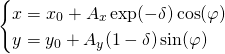
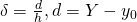
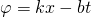

A P-wave
or primary wave is formed from alternating
compressions and rarefactions. During earthquakes P-waves travel faster
than other seismic waves and hence are the first signal from an earthquake
to arrive at any affected location or at a seismograph.
The equation of a P-wave is given by:

An S-wave
or secondary wave is formed ad oscillations
of the particles of the medium is perpendicular to the direction of
wave propagation. Because S-waves travel
slower in rock than P-waves, during earthquakes they arrive after the
primary compressional wave on an earthquake seismogram.
The equation of an S-wave is given by:

A P-wave
or primary wave is formed from alternating
compressions and rarefactions. During earthquakes P-waves travel faster
than other seismic waves and hence are the first signal from an earthquake
to arrive at any affected location or at a seismograph.
The equation of a radial P-wave is given by:

where θ, r are the polar coordinates of a point
(x0, y0) with respect
to the wave origin point C(xc, yc).
An S-wave
or secondary wave is formed ad oscillations
of the particles of the medium is perpendicular to the direction of
wave propagation. Because S-waves travel
slower in rock than P-waves, during earthquakes they arrive after the
primary compressional wave on an earthquake seismogram.
The equation of a radial S-wave is given by:

where θ, r are the polar coordinates of a point
(x0, y0) with respect
to the wave origin point C(xc, yc).
Rayleigh waves
generated by earthquakes travel along the surface of solids. There are
two components in a motion of a particle disturbed by a Rayleigh wave:
horizontal and vertical that totals in movement along an ellipse.
The equation of a Rayleigh wave is given by:



where φ is wave phase in a point,
δ is dimensionless depth,
d is depth of a point (x0, y0) with respect to medium top level Y,
h is total medium depth,
Ax and Ay are horizontal and vertical
amplitudes of the Rayleigh wave respectively.